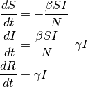
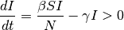
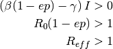
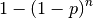

Generic 2: SIR - Targeted vaccination campaigns¶
This tutorial assumes that you have read Generic 1: SIR - Simple single-node outbreak.
This tutorial implements vaccination strategies to control an SIR epidemic in a single-node, village-scale location. The tutorial demonstrates how to configure vaccination interventions and the effect of those vaccine interventions on herd immunity.
The tutorial also demonstrates how to target vaccines to heterogeneous groups within the node. By default, the EMOD executable assumes every individual has the same probability of being selected for vaccination. However, it is possible to model certain groups with low or no vaccination coverage through the use of IndividualProperties. IndividualProperties is added to the demographics file and configured to create the groups. For more information see IndividualProperties.
This tutorial consists of three scenarios:
- Baseline outbreak
- Vaccination campaigns all individuals
- Vaccination campaigns targeted groups
Vaccination and herd immunity¶
In Generic 1: SIR - Simple single-node outbreak, the SIR model assumed all individuals are susceptible before the importation of an outbreak. However, vaccination is the one of the most effective ways to prevent or contain a disease outbreak. This scenario demonstrates the effect of vaccinations.
Starting from the SIR equations discussed in the previous tutorials:

For an outbreak to start, the following condition needs to be satisfied:

If a vaccination campaign with coverage p [0, 1] is performed before the outbreak, only a fraction of susceptible people move to the recovered compartment. If the vaccine take is e [0, 1], representing the probability of being protected after receiving a vaccine dose, the fraction of immune people due to vaccination is ep. Therefore, the previous condition can be reduced to:

Reff is also called the effective reproductive number. Vaccination can reduce the disease’s ability to spread, and the outbreak can be prevented or stopped with less than 100% coverage. When Reff= 1, there exists a minimum vaccination coverage that can prevent a disease outbreak. This minimum coverage required to prevent an outbreak is usually called herd immunity (represented as Pherd). Therefore, the analytical form of Pherd can be derived based on the previous condition:

Multiple rounds of vaccinations¶
If multiple vaccine interventions are performed in the same area, people are selected on a binomial basis and all individuals have the same probability of being included. If the vaccine coverage is p, every individual has a probability p of being selected in a given round. After the first round, the fraction of non-vaccinated is 1-p, and after n rounds this fraction is (1 - p)n. Therefore, the fraction of people getting at least 1 dose is:

For example, the fraction of people getting at least one vaccination with a 50% campaign coverage is shown in the following table. After a few rounds, the coverage increases significantly with the number of campaigns. Scenario B demonstrates this example.
| Number of Campaigns | Covered Fraction (>=1 dose) |
|---|---|
| 1 | 50% |
| 2 | 75% |
| 3 | 87.5% |
| 4 | 93.75% |
| 5 | 96.875% |
However, this is usually not the case. In recent polio eradication campaigns, the number of supplemental immunization activity (SIA) campaigns planned in certain high-risk districts is greater than 6 per year, but poliovirus still persists in the area due to certain groups that are chronically missed. This can be caused by low accessibility, exclusion from SIA microplans, or vaccine refusal. Reff has not been driven below 1 because these susceptible people in the chronically missed groups are still in contact with the rest of population. In some modeling simulations, this assumption has to be included.
In this second example, the same 50% campaign coverage is repeated so that the same amount of vaccine is used. However, 30% of the population is not accessible to any vaccine campaigns. Although the number of vaccine doses used is the same as the previous example, the overall coverage is much less. The scenario C demonstrates this example.
| Number of Campaigns | Covered Fraction of Total Population | Covered Fraction of Groups with Access | Covered Fraction of Groups without Access |
|---|---|---|---|
| 1 | 50% | 71.43% | 0% |
| 2 | 29% | 91.84% | 0% |
| 3 | 68.37% | 97.67% | 0% |
| 4 | 69.53% | 99.33% | 0% |
| 5 | 69.87% | 99.81% | 0% |
Demographics inputs¶
This simulation uses the demographics file “generic_scenarios_individualproperties_demographics”. Except for an IndividualProperties structure, the demographics file is the same as “generic_scenarios_demographics” used in Generic 1: SIR - Simple single-node outbreak.
Individual Properties¶
An IndividualProperties structure is added to Defaults in the demographics file. Its purpose for this scenario is to divide individuals into two groups so the individuals in different groups can be configured differently. In the third scenario, a vaccine campaign will be targeted at only one of the groups but not the other group. This models the situation where individuals in the general population have a chance of receiving a vaccine while the other individuals are in the chronically missed group.
{
"Metadata": {
},
"Defaults": {
"IndividualProperties": [{
"Property": "Accessibility",
"Values": ["Easy", "Hard"],
"Initial_Distribution": [0.7, 0.3],
"Transitions": []
}]
},
"Nodes": [{
}]
}
Property and values¶
The IndividualProperties structure creates groups using the Property and Values parameters.
The Property parameter specifies the property type. This tutorial uses the property type Accessibility.
The Values array defines the groups. Each element in the array is a group. In this tutorial, the groups are “Easy” and “Hard”. They represent the group that is easy to access during a vaccine campaign (Easy), and the chronically missed group (Hard).
Note
Property and Values creates the groups. However, the different behavior of the two groups must be configured with parameters in the campaign files.
Initial_Distribution¶
At the beginning of the simulation individuals are assigned a group using the probabilities in the Initial_Distribution array. The values in the Initial_Distribution array must be in the same order as the groups in the Values array.
At the beginning of the simulation, each individual has a 70% of belonging to the “Easy” accessibility group and a 30% chance of belonging to the “Hard” accessibility group as specified by the Initial_Distribution array.
{
"Defaults": {
"IndividualProperties": [{
"Property": "Accessibility",
"Values": ["Easy", "Hard"],
"Initial_Distribution": [0.7, 0.3],
"Transitions": []
}]
}
}
Note
Transitions is not used in this tutorial but it must be include as an empty array. When the simulation is run, it will create an empty Transitions output file which can be ignored.
Note that this tutorial only uses IndividualProperties to divide the population into groups. In more complex simulations, IndividualProperties can be used to differentiate the disease transmission between multiple groups within a node. This is described in Heterogeneous Intra-Node Transmission (HINT) tutorials.
Key configuration parameters¶
All three of the scenarios in this tutorial use the same simulation set up. Please note each subdirectory has a copy of the config.json file. You can view the complete config.json in the following directories:
- <path_to_directory>RegressionScenariosGeneric Scenarios02_SIR_VaccinationsA_BaselineOutbreak
- <path_to_directory>RegressionScenariosGeneric Scenarios02_SIR_VaccinationsB_VaccinationAll
- <path_to_directory>RegressionScenariosGeneric Scenarios02_SIR_VaccinationsC_TargetedVaccination
Population dynamics parameters¶
Set Enable_Vital_Dyanamics to 0. This will disable vital dynamics (birth and death) in the simulation. For more information, see Population dynamics parameters.
SIR model setup parameters¶
The generic simulation uses an SEIR-like disease model by default. You can modify the default SEIR model to an SIR model by turning off the incubation period and immune decay in the config.json file. For more information, see Incubation and Enable or disable features parameters.
Set the following parameters:
- Set Base_Incubation_Period to 0.
- Set Incubation_Period_Distribution to “FIXED_DURATION.”
- Set Enable_Immune_Decay to 0.
Disease parameters¶
In the following example, we assume the average infection duration is 7 days, and R0 = 4.9. For more information, see Infectivity and transmission parameters.
Set the following parameters:
- Set Base_Infectivity to 7.
- Set Base_Infectious_Period to 0.7.
- Set Infectious_Period_Distribution to “EXPONENTIAL_DISTRIBUTION.”
Timestep and duration parameters¶
For more information, see Simulation setup parameters.
Set the following parameters:
- Set Simulation_Timestep to 1.
- Set Simulation_Duration to 120.
Interventions¶
The three scenarios have different campaign.json files.
A. Baseline outbreak¶
This scenario uses an OutbreakIndividual event at day 30 as the initial seeding of the infection. For more information, see OutbreakIndividual parameters.
{
"Event_Coordinator_Config": {
"Intervention_Config": {
"Antigen": 0,
"Genome": 0,
"Outbreak_Source": "PrevalenceIncrease",
"class": "OutbreakIndividual"
},
"Target_Demographic": "Everyone",
"Demographic_Coverage": 0.0005,
"class": "StandardInterventionDistributionEventCoordinator"
},
"Event_Name": "Outbreak",
"Nodeset_Config": {
"class": "NodeSetAll"
},
"Start_Day": 30,
"class": "CampaignEvent"
}
You can view the complete campaign.json at <path_to_directory>RegressionScenariosGeneric Scenarios02_SIR_VaccinationsA_BaselineOutbreak.
B. Vaccinations for all individuals¶
The following campaign event has three vaccination campaigns that are 7 days apart. The campaigns have a 100% vaccine take rate and a 50% per-campaign coverage. The vaccine is acquisition-blocking and full immunity lasts for 10 years. For more information, see SimpleVaccine parameters.
Set the following parameters:
- Set Number_Repetitions to 3.
- Set Timesteps_Between_Repetitions to 7.
- Set Vaccine_Take to 1.0.
- Set Demographic_Coverage to 3.
- Set Vaccine_Type to “AcquistionBlocking”.
- Set Simulation_Duration to 120.
- Set Primar_Decay_Time_Constant to 3650.
You can also view campaign.json at <path_to_directory>RegressionScenariosGeneric Scenarios02_SIR_VaccinationsB_Vaccinations.
{
"Event_Coordinator_Config": {
"Demographic_Coverage": 0.5,
"Intervention_Config": {
"Cost_To_Consumer": 10.0,
"Durability_Time_Profile": "BOXDURABILITY",
"Primary_Decay_Time_Constant": 3650,
"Reduced_Acquire": 1,
"Reduced_Transmit": 0,
"Vaccine_Take": 1,
"Vaccine_Type": "AcquisitionBlocking",
"class": "SimpleVaccine"
},
"Number_Repetitions": 3,
"Timesteps_Between_Repetitions": 7,
"Target_Demographic": "Everyone",
"class": "StandardInterventionDistributionEventCoordinator"
},
"Nodeset_Config": {
"class": "NodeSetAll"
},
"Start_Day": 1,
"class": "CampaignEvent"
}
C. Vaccination campaigns for targeted groups¶
The following campaign event is the same as the campaign event in scenario B, but it restricts the vaccine campaign to the “Easy” accessibility group by adding a Property_Restrictions parameter and setting it to “Accessibility”: “Easy”. As only 70% of the population is in the “Easy” accessibility group, vaccine coverage is also reduced.
{
"Event_Coordinator_Config": {
"Demographic_Coverage": 0.5,
"Intervention_Config": {
"Cost_To_Consumer": 10.0,
"Durability_Time_Profile": "BOXDURABILITY",
"Primary_Decay_Time_Constant": 3650,
"Reduced_Acquire": 1,
"Reduced_Transmit": 0,
"Vaccine_Take": 1,
"Vaccine_Type": "AcquisitionBlocking",
"class": "SimpleVaccine"
},
"Number_Repetitions": 3,
"Timesteps_Between_Repetitions": 7,
"Target_Demographic": "Everyone",
"Property_Restrictions": ["Accessibility:Easy"],
"class": "StandardInterventionDistributionEventCoordinator"
},
"Nodeset_Config": {
"class": "NodeSetAll"
},
"Start_Day": 1,
"class": "CampaignEvent"
}
You can view the complete campaign.json at <path_to_directory>RegressionScenariosGeneric Scenarios02_SIR_VaccinationsC_TargetedVaccinations.
Run the simulation¶
Run the simulation and generate graphs of the simulation output. For more information, see Run simulations.
Note
Because the EMOD model is stochastic, your graphs may appear slightly different from those given below.
A. Baseline outbreak¶
Figure 1: Outbreak without vaccination campaigns shows the complete trajectory of the outbreak without vaccination campaigns.
Figure 1: Outbreak without vaccination campaigns
Figure 2: Outbreak without vaccination campaigns - property report
B. Vaccinations for all individuals¶
With three campaigns randomly administered, the fraction of immune people is above the herd immunity (in this case, close to 80%), therefore, an outbreak will not start.

Figure 3: Outbreak with vaccination campaigns
Figure 4: Outbreak with vaccination campaigns - property report
C. Vaccination campaigns for targeted groups¶
With three campaigns administered only to the easily accessible group, the fraction of immune people is never above the group size (70%). If there is an outbreak, the group will not reach the herd immunity no matter how many vaccine campaigns are done.
Figure 5: Outbreak with targeted vaccination campaigns
Figure 6: Outbreak with targeted vaccination campaigns - property report
Exploring the model¶
Starting with the campaign.json file in scenario B, change one of the single vaccination intervention by varying the vaccination coverage and observe the herd immunity.